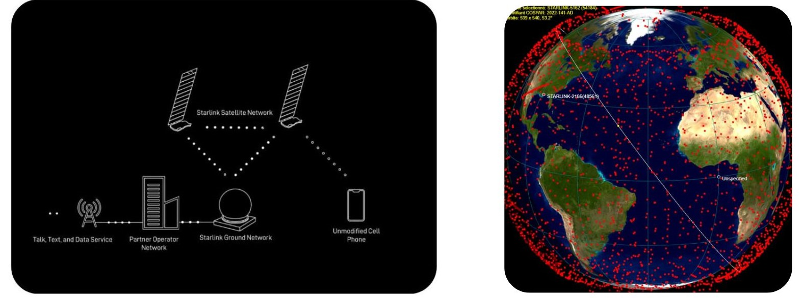
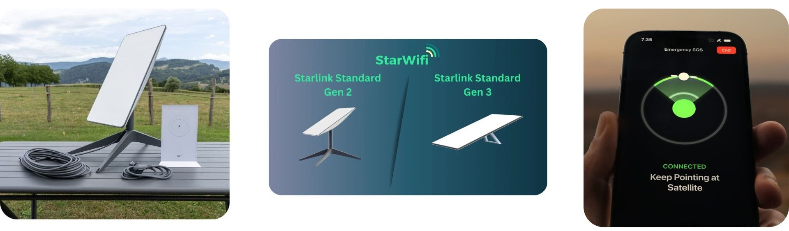

Qu'est-ce que Starlink ?
- Une constellation de milliers de satellites en orbite basse.
- Lancée par SpaceX, entreprise d'Elon Musk.
- Objectif : fournir un accès Internet haut débit à toute la planète.
- Les satellites Starlink sont en orbite basse (environ 550 km au-dessus de la Terre)

Les composants réseau
- Panneaux solaires
- Antenne à réseau phasé: Connecter plusieurs stations terrestres et utilisateurs simultanément.
- Lasers spaciaux optique : 200Gb/s
- Propulseurs Ionique
- Ordinateurs de bord
- Routeur
- Star tracker
- Normes IEEE 802.11a/b/g/n/ac
- Wi-Fi 5
- Double bande - 3 x 3 MIMO
- WPA2
- Couverture Jusqu à 185 m²
Composants d'un satellite starlink:
Caractéristiques du routeur wifi starlink:

Comment ça fonctionne ?
- Les satellites reçoivent et transmettent les données.
- Utilisent le spectre des micro-ondes Ku (12-18 GHz) et Ka (26.5-40 GHz).
- Ku, communication des satellites vers l'antenne (downlink)
- Ka, communications vers le satellite (uplink)
- Connection via une antenne parabolique.
- Un réseau de satellites en constante expansion.
- Antenne parabolique équipée de réseau à commande de phase(s'alligner aux satellites).
- QoS (Quality Of Service)
- TDMA (Time Division Multiple Access)
- FDMA (Frequency Division Multiple Access)
- MIMO (Multiple Input Multiple Output)
Protocoles:

Les avantages de Starlink
- Accès Internet haut débit dans les zones rurales et isolées.
- Résilience aux catastrophes naturelles
- Potentiel pour les communications d'urgence.
- Débit compris oscillant entre 50 à 200Mbps avec une antenne.
- Couverture mondiale
- Accès depuis un télephone compatible reseau LTE
- Débit compris oscillant entre 15,6 à 17,2Mbps.
- Appelle d'urgence gratuit
- 2025 messages et appelles télphonique avec forfait.
- Concurence avec les FAI.
Starlink Direct to Cell.
